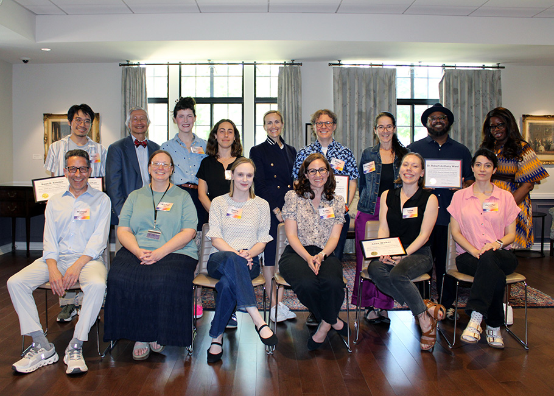

Searle Fellows Program (Celebration and Ceremony)
May 29, 2026
As the academic year draws to a close, we gathered with our mentors last Wednesday at Scott Hall to celebrate the end of the 2025-26 Searle Fellows Program (SFP) at the certificate ceremony. Now in its 27th year, Northwestern’s Office of the Provost and the Searle Center for Advancing Learning and Teaching have brought early-career research and teaching faculty together since 1999 to build a collaborative community dedicated to advancing learning and teaching. As the 2025-26 Searle Fellows, we have participated in a year-long program with meetings, pedagogical resources, discussions, and activities focused on innovative learning and teaching practices.
Throughout the year, each Searle Fellow worked on a project to include in their e-portfolio. For my Searle Fellows Project, I revised the syllabus and learning activities for my first-year writing seminar to support students’ academic writing. My project addresses a common challenge: many students come in with high school writing experience but are not ready for the demands of college-level academic and argumentative writing. First-year students need support in finding evidence, building arguments, analyzing information, and developing their own academic voice, rather than just summarizing ideas. These skills are especially tough to master as students adjust to a new environment and learn to manage their time and responsibilities independently. I created new classroom activities that let students practice writing skills together before turning in assignments. These activities encourage group discussion and teamwork instead of working alone on writing tasks.
The Associate Provost for Undergraduate Education, Karen Smilowitz, who was also a Searle Fellow in 2012-13, delivered an encouraging speech. She congratulated us on our projects and our contributions to advancing undergraduate and graduate teaching and learning at Northwestern University. Later, Jennifer Keys, Senior Director of the Searle Center, spoke about the program’s history and current participants. She welcomed each fellow to the podium to receive their certificates, introduced their projects, and shared highlights from their teaching philosophies. We received our certificates from our mentors, from the Searle Fellows Distinguished Faculty Mentor, Michael Fagen, and the Assistant Director of Reflective Pedagogy, Kate Flom Derrick, who has directed the Fellows Program this past year. Each mentor’s praise and comments were read (and printed on our certificates) as we concluded the 2025-26 Searle Fellows Program.
My mentor, Caroline Egan (Assistant Professor in the Department of Spanish & Portuguese), shared her expertise as a tenure-line academic and provided valuable feedback throughout my Searle Fellow year. She said, “Bihter Esener designed a scaffolded program to introduce students to the fundamentals of academic writing, from identifying scholarly sources through conducting peer-review workshops. While rooted in her expertise as an Art Historian, the flexibility of the activities will make them invaluable pedagogical resources for colleagues and students across disciplines.”
